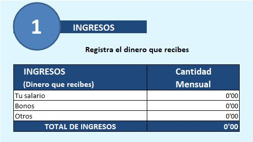
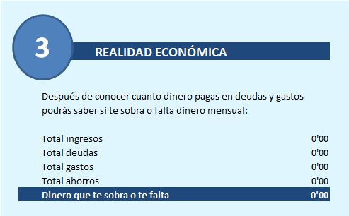
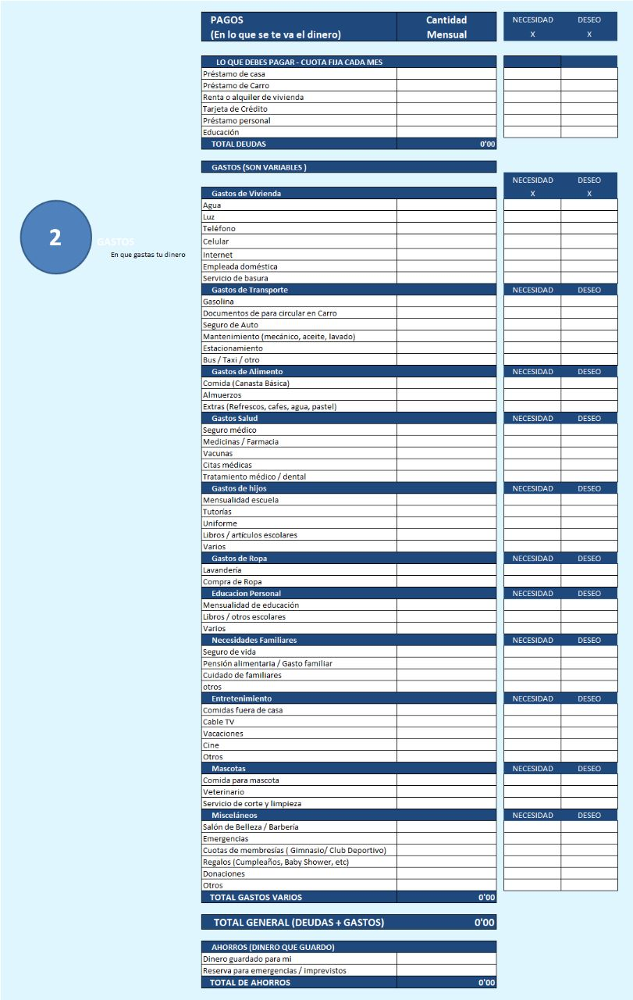
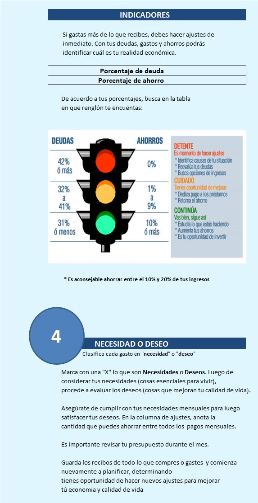

Es importante realizar una planificación para alcanzar objetivos financieros,
como un proceso continuo que ayude en la toma de decisiones razonables sobre el uso del dinero. Tu plan te guiará en el camino hacia la consecución de
tus metas, tus sueños y deseos, siempre de acuerdo a tus preferencias y valores.
|
|
|  |  |
|  | |
|  | |